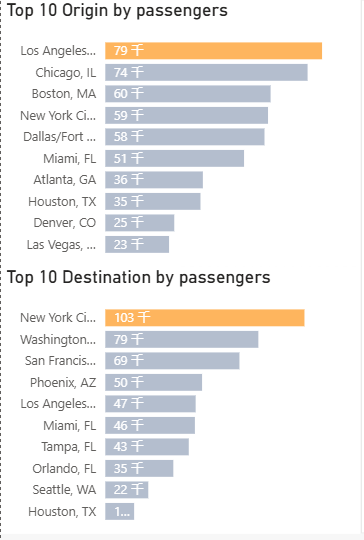
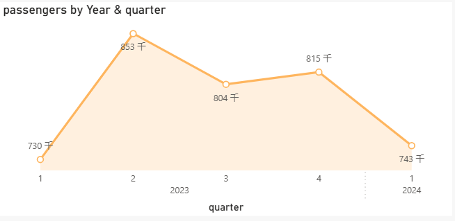
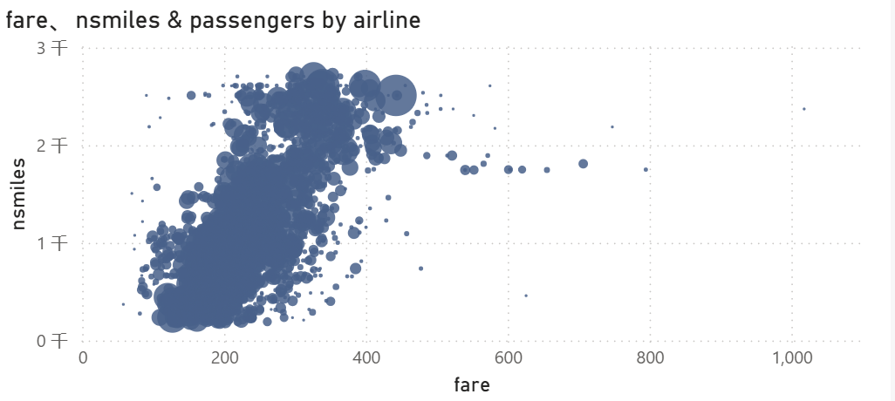
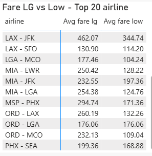
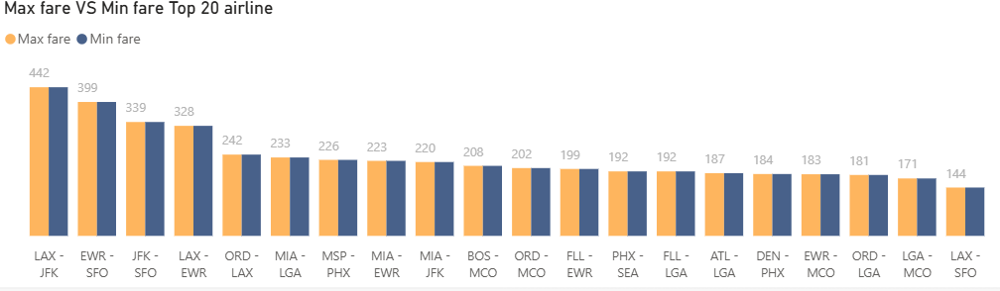
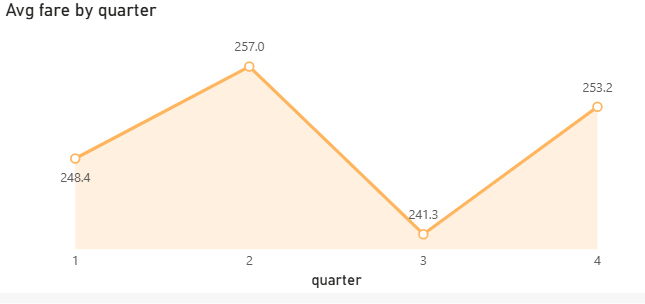
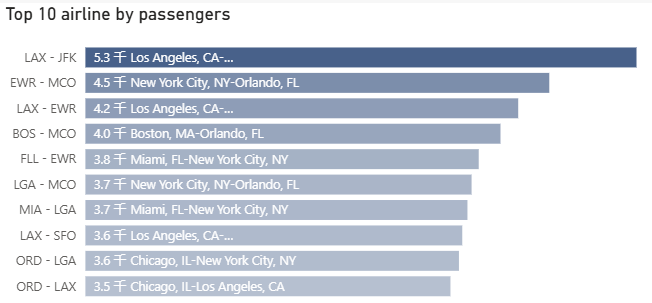

Embark on a journey through the skies of the United States.
Imagine a vast sky crisscrossed by countless airplanes, carrying passengers to their dreams and destinations across the United States. Our research dives deep into the world of US domestic air travel, focusing on the intricate web of passenger movements, fare dynamics, and mileage patterns among major cities. It's a quest to understand the heartbeat of air travel within the nation.
We set out on this journey with a clear purpose. We wanted to peel back the layers and discover where passengers were taking off from and landing at. By analyzing data, we aimed to uncover the ebb and flow of passenger numbers throughout the year, as well as how fares danced with the seasons and across different routes. Why? Because this knowledge can be a compass for travelers planning their adventures and a roadmap for airlines charting their courses.
As we delved into the data, a vivid picture emerged. Los Angeles, with its sunny allure, became a bustling hub of departures, sending 79 thousand passengers on their way. Chicago and Boston, too, were among the top starting points. On the flip side, New York City, like a magnetic metropolis, drew in a whopping 103 thousand passengers as a destination. Washington and San Francisco also shone brightly on the destination map. It's as if these cities are the stars around which the constellation of air travel revolves.
The story of passenger numbers throughout 2023 and 2024 was like a symphony with its crescendos and diminuendos. In the second quarter of 2023, the number of passengers hit a high note of 853 thousand, perhaps lured by the warmth of summer and the promise of vacations. But as the year rolled on, the numbers ebbed and flowed, ending at 743 thousand in the first quarter of 2024. The seasons, holidays, and the eagerness of travelers all played their parts in this rhythmic dance.
Our exploration then led us to the relationship between fares and mileage. Like a dance between two partners, fares and mileage moved in tandem, yet with a bit of improvisation. Flights with higher fares often took passengers on longer journeys, but there were exceptions, like a dancer breaking from the routine. This scatter - plot dance told a story of the complex interplay between distance and cost in the world of air travel.
Venturing into the realm of route - specific fares, we discovered a landscape of contrasts. Take the Los Angeles - New York (LAX - JFK) route, for instance. It boasted an average high fare of 462.07 and an average low fare of 344.74. Different routes, like different paths in a forest, had their own unique price tags, shaped by distance, operating costs, and the all - important market demand.
Peeking into the maximum and minimum fares of various routes was like looking at the peaks and valleys of a mountain range. The Los Angeles - New York (LAX - JFK) route again caught our eye, with a maximum fare reaching 442 and a minimum of 399. These price extremes on different routes painted a picture of the diverse pricing strategies and market forces at play.
As the quarters passed, fares also took on a life of their own. In the second quarter of 2023, they soared to an average of 257.0, maybe riding the wave of peak travel demand. Then, in the third quarter, they dipped to 241.3, perhaps cooling off with the changing weather. But by the fourth quarter, they rebounded to 253.2, like a phoenix rising. It was a seasonal saga of supply and demand, fuel costs, and traveler behavior.
Finally, we turned our gaze to the busiest routes. The Los Angeles - New York (LAX - JFK) route emerged as a superhighway in the sky, with a passenger flow of 5.3 thousand. Routes like New York - Orlando (EWR - MCO) also carried a significant number of travelers. These routes were the arteries of US domestic air travel, pulsing with the energy of business trips, vacations, and family reunions.
